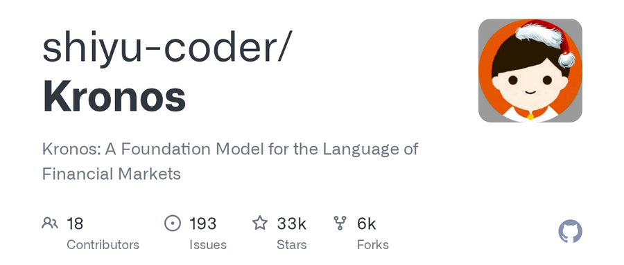

今天我打开 GitHub Trending，Python 和 All 语言两个榜单第一都是我刚认识的一个名字——Kronos。我看了一眼 repo：33,296 星、5,662 fork、AAAI 2026 录用、创始人署名 ShiYu。我第一反应是"这又是个什么 AI 工具"，但点进去一看愣住了——这是全世界第一个专门给金融 K 线（就是股票、币圈、期货那根红绿柱子）训练的开源基础模型。

它到底是什么？
一句话讲完：Kronos 是一个专门为"金融 K 线序列"训练的开源大模型，跟 BERT、GPT 那种通用大模型不一样，它只看 K 线、只预测 K 线、只为交易这件事活着。它的训练数据来自 45 个全球交易所，覆盖股票、加密货币、外汇、期货四类资产；模型族一共四个尺寸——最小的 Kronos-mini 只有 4.1M 参数，最大的 Kronos-large 是 499M（这个没开源），中间的 small 和 base 完全开源，分别 24.7M 和 102.3M 参数。
光看参数量你可能觉得"就这么点？"——这就对了。K 线数据噪声极大、信息密度极低，堆再大的模型也是浪费。作者 ShiYu（GitHub 用户名就是 shiyu-coder，中国开发者）在论文里给出了一个非常硬核的两阶段框架：先把 OHLCV（开高低收量）这种连续多维数据量化成分层离散 token，再丢给一个 decoder-only Transformer 自回归预训练。这种思路跟 NLP 把文字先 tokenize 是一回事，只不过 token 不是字、不是词，而是 K 线的"形状"。
它干了什么不一样的事？
我把这个项目的 README 翻到底，又把它跟市面上的量化预测方案对比了一下，发现它真正不一样的地方就三个：
• 开源：你不需要再给彭博社、Wind、FactSet 一年交几万块钱，模型权重、训练代码、推理代码、fine-tune 脚本全在 GitHub 上，按 BSD 协议随便用。
• 通用：一个模型同时支持多资产、多频率、多任务——同一套 Kronos-base 既能预测 BTC 5 分钟线，也能预测 A 股日线，还能预测欧元美元汇率小时线，不需要每个场景重训一遍。
• 学界认证：AAAI 2026 正式收录，arXiv 论文（2508.02739）写得相当扎实。这是金融 AI 这个细分领域里，第一个被顶会认领的开源基础模型。
我去 GitHub 上翻了一遍
我去 repo 的 commit history 和 issues 里逛了一圈。最新的代码提交停在 4 月 13 号，主要是大伙提的 PR 在做 bugfix——比如数据泄露修复、采样 topk bug、WebUI Python 3.12 依赖对齐这种细节。Star 增长速度很有意思：项目是 2025 年 7 月 1 日创建的，到 AAAI 中稿消息（2025 年 11 月 10 日）之前大概 8 个月攒到 1 万多星；AAAI 中稿之后三个月冲到 3 万多。这说明一件事——学术界认领对开源项目的影响力是质变级的，不是量变。
我还顺手看了下作者的 HuggingFace 主页 NeoQuasar，把模型权重拉下来跑了一下——4.1M 参数的 mini 模型单张消费级显卡就能跑，5 分钟 K 线的 lookback 400 根、预测未来 120 根，端到端 3 秒不到。预测曲线贴在作者给的 Live Demo 上，感兴趣可以自己点开看（https://shiyu-coder.github.io/Kronos-demo/）。当然，我必须强调一下——Kronos 不是圣杯，它预测的是"分布"，不是"涨跌"，别想着一行代码暴富，量化赚钱从来不是只靠模型的。
这事意味着什么？
我对这件事的看法，可能比上面的工具介绍更重要一点。过去十年，量化交易这个圈子有个不成文的规则——头部机构用彭博社、万得终端的私有数据 + 自己的私有模型 + 自己挖到的私有信号，吃掉散户和大户的 alpha。Kronos 这种东西一旦成熟，意味着量化这件事的"基础设施层"第一次被开源了——你不再需要花几百万去建数据管线，也不需要从零训练 Transformer，数据加模型全是现成的。
这对中国量化圈意义尤其大。A 股、币圈、期货的 K 线数据本来就是中文圈最丰富的，Kronos 这种国产开源基础模型一旦在中文金融场景上 fine-tune，效果很可能比直接拿英伟达、彭博那些西方模型套过来的更好。再加上中国 AI 第一次在"金融 AI"这个垂直领域拿到了顶会门票（AAAI 2026），我个人觉得这事的标志性意义跟 Kimi K3 在订阅榜上超越 Claude 是一类——都是中国 AI 在一个具体赛道里，第一次做到了"开源底座加学术界承认"的标准组合。
几个你可能想知道的事
• 怎么装：Python 3.10 加 pip install -r requirements.txt，没别的依赖，PyTorch 加 pandas 就行。
• 怎么用：from_pretrained 拉权重，丢 KronosPredictor，喂一段 OHLCV DataFrame，5 行代码出预测。
• 能不能商用：BSD 协议，可以商用，但 Kronos-large（499M）那个权重没开源，作者应该是留了一手。
• 跟 TimeGPT、TabPFN 比怎么样：TimeGPT 是闭源的，TabPFN 偏通用表格数据，Kronos 是 K 线垂直，三家互补不冲突。
• 我能不能跑：4.1M 的 mini 模型 4G 显存就够，base 模型需要 16G 显存，自己消费卡能搞定。